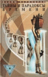

Тайны времени

Автор систематизирует и анализирует информацию о чудесах, парадоксах и неслучайных `случайностях`, связанных со Временем. Он доказывает, что время поддается влиянию со стороны человеческого организма, явлений природы и технических средств, не всегда и невезде постоянно, течет в разных направлениях и им можно управлять. В результате такого подхода практически все известные нам аномальные явления — исчезновения в Бермудском треугольнике, Тунгусский метеорит, НЛО, шаровые молнии и т.д. — становятся звеньямиодной цепи и получают правдоподобное объяснение.1. ПРОЯВЛЕНИЯ ВРЕМЕНИ :
Время: СЕМЬ МИФОВ СЕДЬМОГО ОКЕАНА.
Время и планета Земля: "ЗАКОЛДОВАННЫЕ" МЕСТА БЕЗ КОЛДУНОВ.
Бермудский треугольник: ВРЕМЯ СТАНОВИТСЯ ВИДИМЫМ.
Обратный ход времени: ТОЛЬКО ГЛУПЫЕ МАЛЬКИ НЕ МОГУТ ПЛЫТЬ ПРОТИВ ТЕЧЕНИЯ.
Тунгусский метеорит и время: 101-Я ГИПОТЕЗА ТАЙНЫ ВЕКА.
Время и молнии: ТЫСЯЧА ЧЕРТЕЙ В ОДНОЙ УПРЯЖКЕ.
Египетские пирамиды и Время: ПРОТИВОЯДИЕ ОТ ПРОКЛЯТЬЯ ФАРАОНОВ.
2. ВРЕМЯ И ЧЕЛОВЕК :
Искаженное времявосприятие: И ДОЛЬШЕ ВЕКА ДЛИТСЯ ДЕНЬ.
Время и человек: СТРЕСС ПРЕССУЕТ СЕКУНД МГНОВЕНЬЯ.
Болезни времени: ВЕЧНЫЕ СНЫ И СВЕРХБЫСТРАЯ СТАРОСТЬ.
Ноль-время и анабиоз: ОСТАНОВЛЕННАЯ ВЕЧНОСТЬ В КАМЕННОМ ПЛЕНУ.
Время и смерть: ПЕРЕД ПОСЛЕДНИМ "ПРОЩАЙ" НЕ НАДЫШИШЬСЯ.
Пуленепробиваемость: ТАК КОГО ЖЕ БОЯТСЯ ПУЛИ?.
Везение: РАБОЧИЕ БУДНИ АНГЕЛА-ХРАНИТЕЛЯ.
Температурная невосприимчивость: ХОЖДЕНИЕ ПО МУКАМ… БЕЗ ВСЯКОЙ БОЛИ.
Время и волшебство: ЗНАЮ Я ТАКОЕ СЛОВО…
3. МАШИНА ВРЕМЕНИ :
Хрономиражи: ЗВУКИ СОБСТВЕННЫХ ШАГОВ ГУЛЯЮТ САМИ ПО СЕБЕ.
Потерявшиеся во времени: ВЕРНИТЕ МЕНЯ В СВОЙ ВЕК!!!.
Иновремяне: ГЕРОИ НЕ НАШЕГО ВРЕМЕНИ.
История машины времени: ГОСТИ ИЗ ПОСЛЕЗАВТРА НАСЛЕДИЛИ ЕЩЕ ПОЗАВЧЕРА.
Машина времени: УЭЛЛС БЫЛ ПРАВ.
Создание прототипов машины времени: ГДЕ И КОГДА НАЙТИ ТОЧКУ ОПОРЫ ВО ВРЕМЕНИ.
Эксперименты с прототипами МВ: УПРАВЛЕНИЕ ТЕМПОМ И ХОДОМ ВРЕМЕНИ.
Последствия экспериментов с МВ: ЗРИТЕЛИ ИЗ ДРУГОГО ВРЕМЕНИ?.
Машина времени и нло: КАК УСТРОЕНА ЛЕТАЮЩАЯ ТАРЕЛКА.
Время и техника безопасности: БОЙТЕСЬ СТРАННЫХ ТУМАНОВ!!!.
Войны во времени: ВЕЛИКО ВРЕМЯ, А ОТСТУПАТЬ НЕКУДА!.
Время и самовозгорания: СГОРАЮЩИЕ ОТ СТЫДА ЗА НАС ВСЕХ?.
Время и бессмертие: ЧЕЛОВЕЧЕСКАЯ ВЕЧНАЯ МЕЧТА – ЖИТЬ ВЕЧНО.
Время и психология: САМОЕ ПРИТЕГАТЕЛЬНОЕ И САМОЕ СТРАШНОЕ ОДНОВРЕМЕННО.
4. ХРОНОНАВИГАЦИЯ :
Полеты в прошлое: МОЖНО ЛИ РАССТРОИТЬ СВАДЬБУ РОДИТЕЛЕЙ ГИТЛЕРА?.
Вмешательство в Историю: НЕ РАЗДАВИТЕ НОГОЙ ЦИВИЛИЗАЦИЮ.
Этика вмешательства в Историю: ШРАМ НА СПИНЕ (фантастический рассказ).
Встречи с самим собой: НА БРУДЕРШАФТ С ЗЕРКАЛОМ.
Маятник времени: ПОЧТИ ФАНТАСТИЧЕСКАЯ ИСТОРИЯ.
Цикличность времени и истории: НОВОЕ И НЕДОСТАТОЧНО ЗАБЫТОЕ СТАРОЕ.
Бифуркационные точки времени: ИСТОРИЯ С ПРИСТАВКОЙ "ЕСЛИ".
Поиск и идентификация иновремян: ЛОВЛЯ ПРИШЕЛЬЦЕВ НА НАЖИВКУ.
Цели полетов МВ: КЛАДЫ, ТАЙНЫ, ЗНАНИЯ И ВЛАСТЬ.
5. БУДУЩЕЕ ВРЕМЯ :
Полеты в будущее: ПОБЫВАТЬ В ЗАВТРА УЖЕ СЕГОДНЯ.
Воспоминания о будущем: У ПИСАТЕЛЕЙ СВОЯ МАШИНА ВРЕМЕНИ.
Предсказания будущего: ЧТО ВЫ ЧУВСТВОВАЛИ ВЧЕРА, КОГДА ВИДЕЛИ ЗАВТРА.
Предчувствие смерти: НЕ ПРОПУСТИТЬ БЫ ТРЕТИЙ ЗВОНОК.
Конец света: ЕСТЬ ЛИ У КОНЕЙ АПОКАЛИПСИСА СТОП-КРАН ИСТОРИИ?.
Третья мировая война: ЧЕТВЕРТЫЙ РЕЙХ ПРОТИВ ТРЕТЬЕГО РИМА.
Контактеры о времени: КОГДА СЕКУНДЫ БЫВАЮТ ЗЕЛЕНЫМИ.
6. ХРОНОПОРТАЦИЯ :
Время и полтергейст: СПЕЦСЛУЖБЫ ТОГО СВЕТА.
Материализация: ПО МАНОВЕНИЮ ВОЛШЕБНОЙ ПАЛОЧКИ.
Время и невидимые стены: ВОЗДУШНЫЕ ЗАМКИ НЕ СНОСИТ ВЕТРОМ.
Параллельные миры: УЛЫБАЙТЕСЬ, ЗА ВАМИ НАБЛЮДАЮТ НЕВИДИМКИ!
Время и параллельные миры: Я, Я, Я И ДИНОЗАВРЫ – ВСЕ ОНИ МОИ СОСЕДИ.
Малообъяснимые перемещения: ВДРУГ ОТКУДА НЕ ВОЗЬМИСЬ…
Телепортация: СКВОЗЬ СТЕНЫ И ТЕРНИИ.
Хронопортатор: ПРЫЖОК ЧЕРЕЗ БЕСКОНЕЧНОСТЬ.
7. ВРЕМЯ :
Время в быту: ПОЛЛАПТЯ ДО ОБЕДА.
Время и философия: ДВАЖДЫ В ОДНУ РЕКУ.
Время и наука: КОНВЕРГЕНЦИЯ ИНВЕРСИИ С ДИСТОРСИЕЙ.
Время и машина времени: УЗОР ИЗ КРАСИВЫХ КАМУШКОВ ЕЩЕ НЕ СЛОЖЕН.